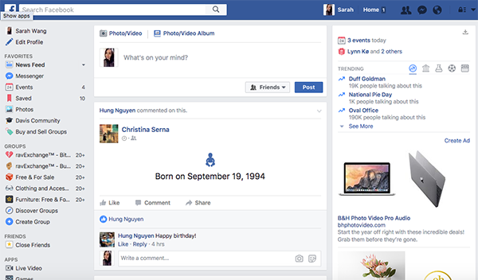

January 12, 2016
User Interface Review
The user interface I will be evaluating today is the main interface of my studio 3 assignment called "The Archive."Facebook when you log into your Facebook.

Facebook is a popular social media website that is used globally and across all system platforms.
In terms of the visual design of Facebook, Facebook has a simple and neutral color pallette that includes primarily blacks, grays, blues and whites. facebook has organized its layouts primarily in columns. Facebook uses simple colored icon
designs to further aid users in identifying what the link indicate.
In terms of the effectiveness of facebooks interface design, I think Facebook has strategically, effectively, and successfully layed out all its components in the most logical sequence possible. It's navigational links are thoughtfully listed in groups and most likely most usered in general by most of its users. There is text hierarchy and small intergrated instructions on how to use features of Facbook to further effectiveness.
January 12, 2016
User Interface Review
The user interface I will be evaluating today is the main interface of Facebook when you log into your Facebook.
Facebook is a popular social media website that is used globally and across all system platforms.
In terms of the visual design of Facebook, Facebook has a simple and neutral color pallette that includes primarily blacks, grays, blues and whites. facebook has organized its layouts primarily in columns. Facebook uses simple colored icon
designs to further aid users in identifying what the link indicate.
In terms of the effectiveness of facebooks interface design, I think Facebook has strategically, effectively, and successfully layed out all its components in the most logical sequence possible. It's navigational links are thoughtfully listed in groups and most likely most usered in general by most of its users. There is text hierarchy and small intergrated instructions on how to use features of Facbook to further effectiveness.